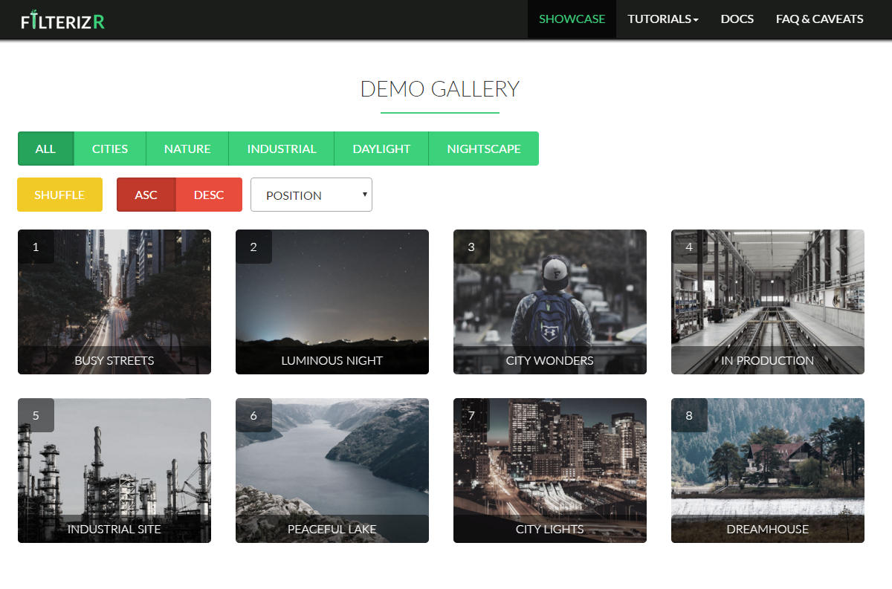

{% if page.header.overlay_color or page.header.overlay_image or page.header.image %}
  {% include page__hero.html %}
{% elsif page.header.video.id and page.header.video.provider %}
  {% include page__hero_video.html %}
{% endif %}

{% if page.url != "/" and site.breadcrumbs %}
  {% unless paginator %}
    {% include breadcrumbs.html %}
  {% endunless %}
{% endif %}

<div id="main" role="main">
  
<div class="container-fluid">

        
        <!-- Portfolio -->
        <div class="portfolio-row row">
            <section class="container portfolio" id="portfolio">
                <div class="row">
                    <h2>Portfolio</h2>
                </div>

                

                <div class="row">
                    <div class="showcase-container clearfix" id="showcase-container">

                        <section class="col-sm-6 filtr-item showcase-item" data-category="1, 2">
                            
                            <div class="item-desc">
                                <h4>Filterizr</h4>
                                <p>A jQuery plugin for filtering, sorting,shuffling and searching responsive galleries with custom CSS effects.</p>
                                <a class="button preview-btn" href="filterizr/index.html" target="_blank">Visit</a>
                                <a class="button github-btn" href="https://github.com/giotiskl/Filterizr" target="_blank">GitHub</a>
                            </div>
                        </section>

                        <section class="col-sm-6 filtr-item showcase-item" data-category="1">
                            
                            <div class="item-desc">
                                <h4>Photocraft</h4>
                                <p>Photocraft is an elegant, free Bootstrap photography-portfolio theme. Licensed under MIT.</p>
                                <a class="button preview-btn" href="showcase/photocraft/index.html" target="_blank">Visit</a>
                                <a class="button github-btn" href="https://github.com/giotiskl/Photocraft" target="_blank">GitHub</a>
                            </div>
                        </section>

                        <section class="col-sm-6 filtr-item showcase-item" data-category="1">
                            
                            <div class="item-desc">
                                <h4>Xtreme Travels</h4>
                                <p>A single-pager developed for a fictitious travel agency specializing in organizing trips to wild destinations.</p>
                                <a class="button" href="showcase/xtremetravels/index.html" target="_blank">Visit</a>
                            </div>
                        </section>

                        <section class="col-sm-6 filtr-item showcase-item" data-category="1">
                            
                            <div class="item-desc">
                                <h4>Akustix</h4>
                                <p>A free Bootstrap theme for guitar manufacturers and retailers. Licensed under MIT.</p>
                                <a class="button preview-btn" href="showcase/akustix/index.html" target="_blank">Visit</a>
                                <a class="button github-btn" href="https://github.com/giotiskl/Akustix" target="_blank">GitHub</a>
                            </div>
                        </section>
                    </div>
                </div>


            </section>
        </div>
  
</div>